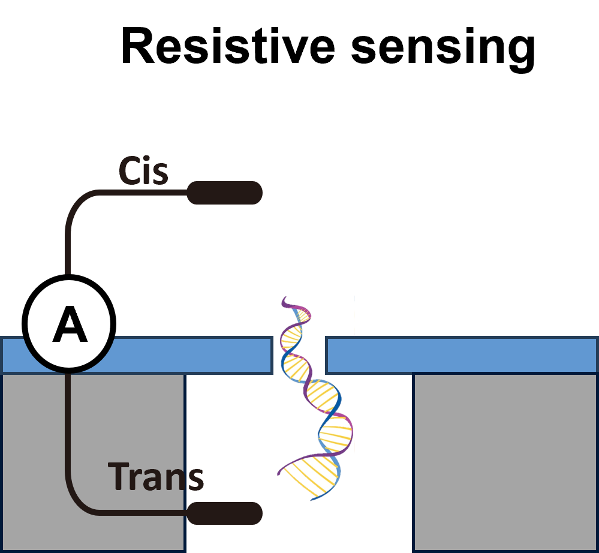
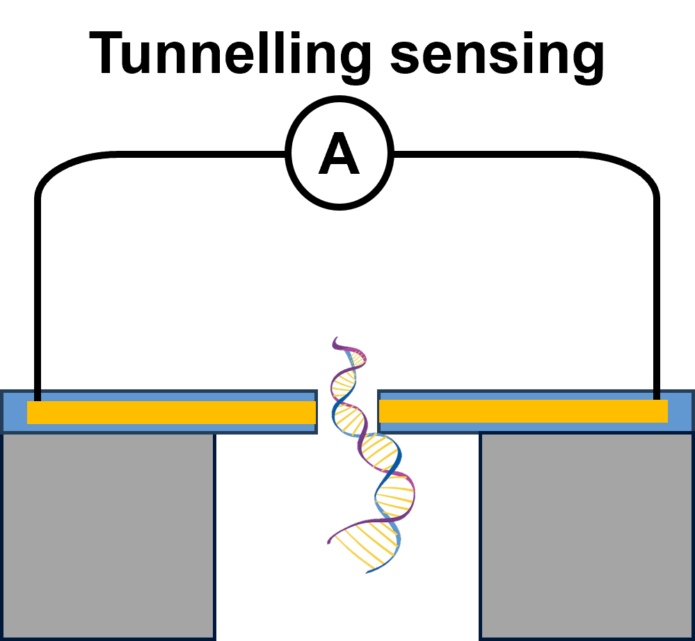
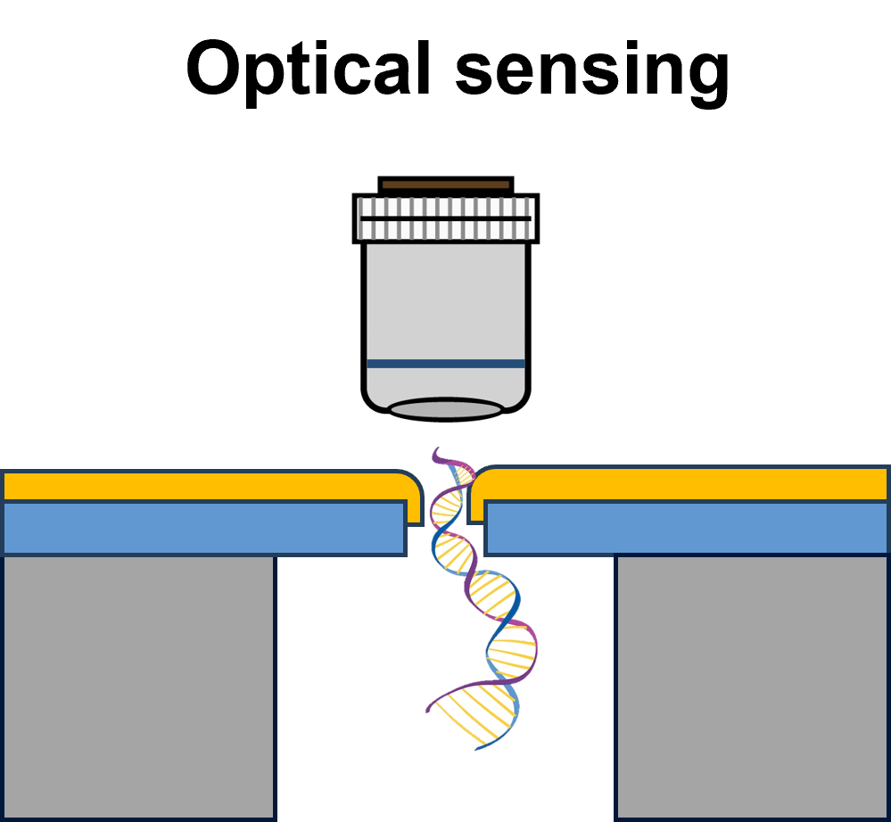

We offer customized nanopore design for your application needs
Solid-state nanopores with precision, configurability and scalability
Control membrane thickness and pore diameter across entire wafers
Pores in stable thin membranes with defined geometry
Exceptional electrical and mechanical stability in salt solutions
Flexible array configurations tailored to specific experimental requirements
Supporting versatile solid-state nanopore sensing technologies

Monitor ion flow through nanopores for single-molecule detection, and biomolecular characterization

Leverage quantum tunneling effects for ultra-high resolution molecular identification and electronic DNA sequencing

Combine nanopore sensing with optical detection for multimodal analysis and enhanced signal-to-noise ratio